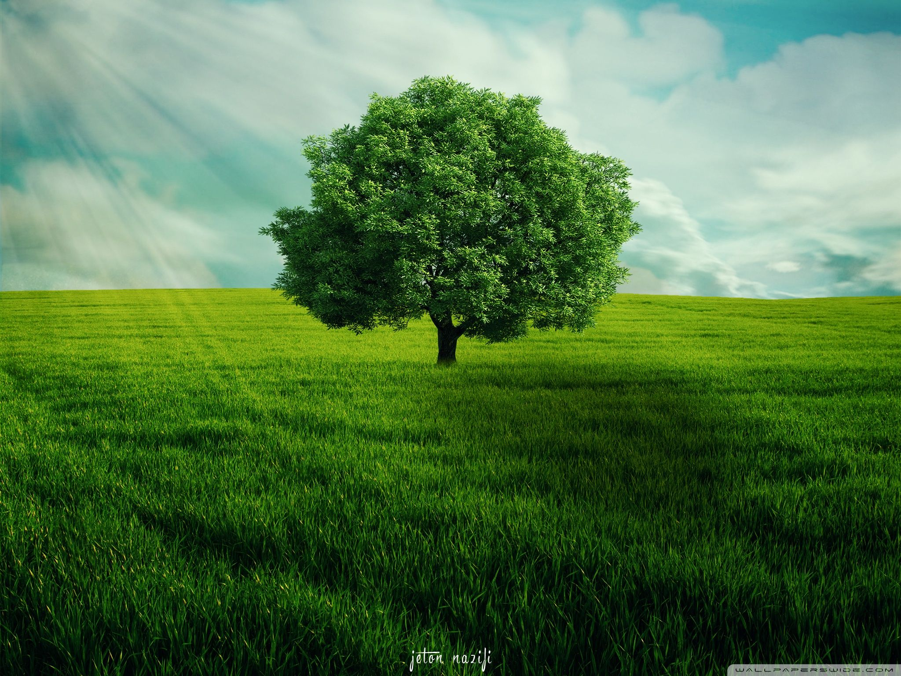

Definition of a tree
As you know, there are many different tree species. However, they all share some key features that meet the criteria for what we understand to be a tree.
Here's our simple definition:
A tree is a tall plant that can live for a very long time. It has a single stem or trunk and branches that support leaves. Beneath the ground, a tree has a root system that acts as an anchor and stores the water and nutrients the plant needs to grow.
One of the ways we distinguish trees from other plants is their thick and rigid ligneous tissues, which we know as wood. And of course, different tree species are made up of different types of wood.
Ultimately, while it's useful to have a basic tree definition, as with all nature we need to delve deeper to understand the sheer variety of trees in the forest.
Let's explore some of the other features that make trees such a special and important part of the natural environment.
